Procédure d'installation
Cette page explique comment installer, lancer et désinstaller Relicfall sur Windows 10 et Windows 11.
Prérequis
Aucun prérequis logiciel n’est nécessaire. L’installateur embarque toutes les dépendances nécessaires : Python, Pygame et les bibliothèques réseau.
- Système d’exploitation : Windows 10 ou Windows 11, 64 bits
- Processeur : Intel Core i3 ou équivalent
- Mémoire vive : 2 Go de RAM
- Espace disque : 200 Mo libres
- Résolution minimale : 1280 × 720
- Connexion réseau locale (LAN) pour le multijoueur
Installation
Étape 1 — Télécharger l’installateur
Rendez-vous sur le site du projet, choisissez la version souhaitée, puis cliquez sur le bouton de téléchargement pour récupérer le fichier RelicfallSetup.exe.
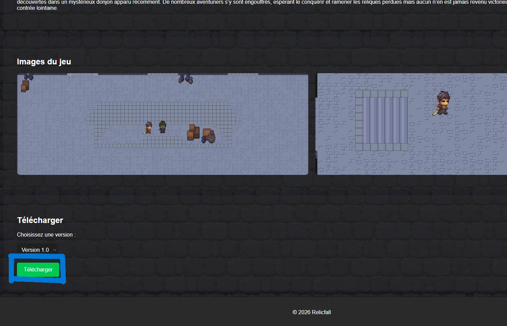
Étape 2 — Lancer l’installateur
Ouvrez le dossier contenant RelicfallSetup.exe, puis double-cliquez sur le fichier pour démarrer l’installation.
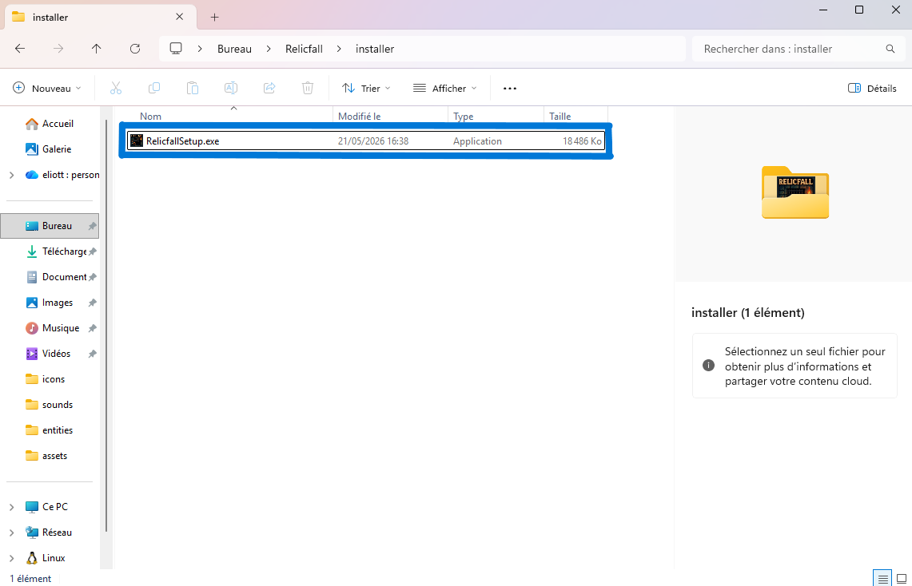
Étape 3 — Autoriser l’installation
Si Windows affiche une fenêtre de contrôle de compte utilisateur, cliquez sur Oui pour autoriser l’installation.
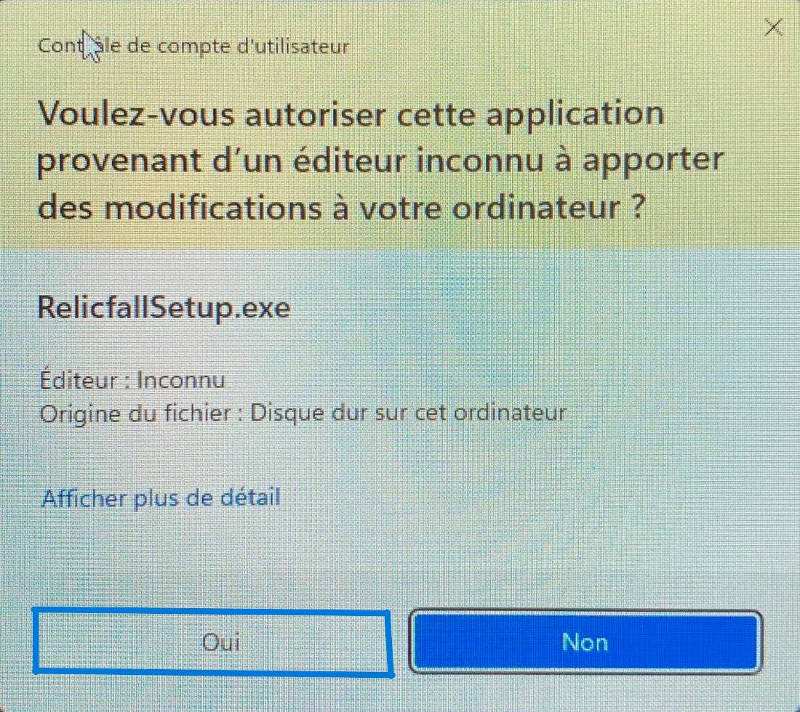
Étape 4 — Choisir le dossier d’installation
L’assistant propose un dossier d’installation par défaut. Vous pouvez le conserver ou le modifier avec le bouton Browse. Cliquez ensuite sur Next.
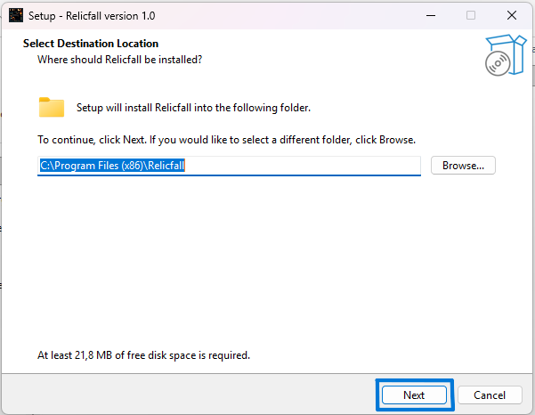
Étape 5 — Choisir le dossier du Menu Démarrer
Le raccourci sera placé dans le dossier Relicfall du Menu Démarrer. Laissez la valeur par défaut, puis cliquez sur Next.
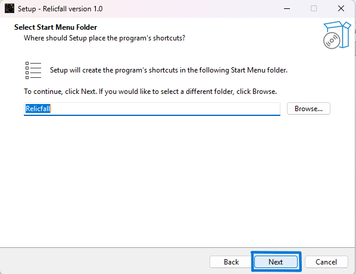
Étape 6 — Lancer l’installation
L’assistant affiche un récapitulatif de l’installation. Cliquez sur Install pour commencer.
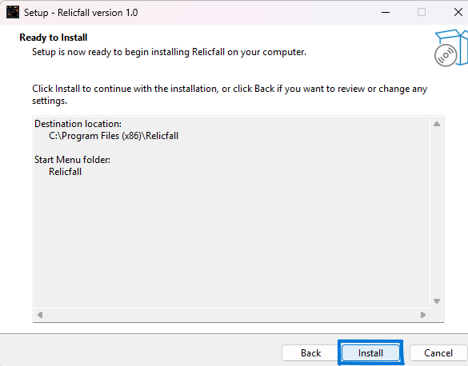
Étape 7 — Terminer l’installation
Une fois l’installation terminée, vous pouvez cocher Lancer Relicfall pour démarrer le jeu immédiatement, puis cliquer sur Finish.
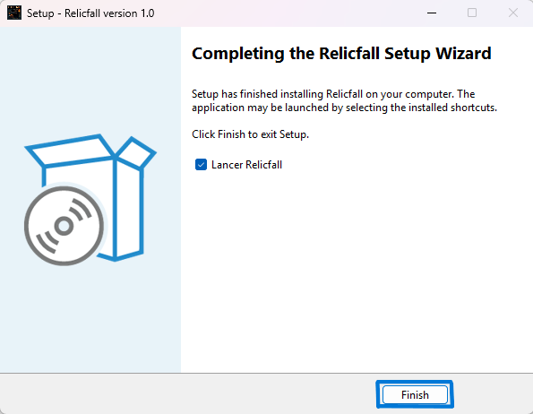
Résultat de l’installation
Après l’installation, les éléments suivants sont créés sur votre système :
— C:\Program Files\Relicfall\Relicfall.exe – exécutable principal du jeu
— C:\Program Files\Relicfall\unins000.exe – programme de désinstallation
— Raccourci dans le Menu Démarrer → dossier Relicfall
— Raccourci sur le Bureau
— Entrée dans Ajout/Suppression de programmes de Windows
Les paramètres et sauvegardes utilisateur sont stockés séparément dans le dossier :
%APPDATA%\Relicfall.
(ex. : C:\Users\VotreNom\AppData\Roaming\Relicfall)
Lancement du jeu
Mode solo ou hôte multijoueur
Double-cliquez sur l’icône Relicfall depuis le Bureau ou le Menu Démarrer. Depuis le menu principal, choisissez Jouer en local pour une partie solo ou Créer une partie pour héberger une session multijoueur sur le réseau local.
Mode client multijoueur
- Vérifiez que l’hôte a déjà lancé une partie.
- Assurez-vous que les deux machines sont connectées au même réseau local.
- Lancez Relicfall sur votre machine.
- Choisissez Rejoindre une partie.
- Le jeu détecte automatiquement le serveur sur le réseau local.
Désinstallation
Étape 1 — Ouvrir les paramètres
Ouvrez la recherche Windows, tapez paramètres, puis cliquez sur Ouvrir.
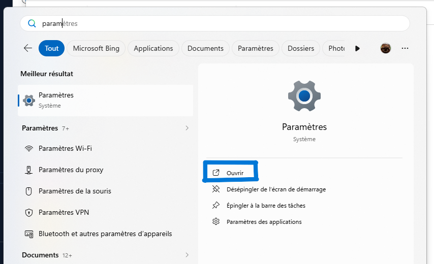
Étape 2 — Applications
Dans le menu de gauche, cliquez sur Applications.
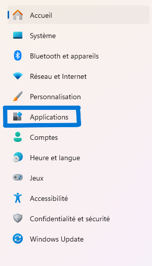
Étape 3 — Applications installées
Cliquez sur Applications installées.
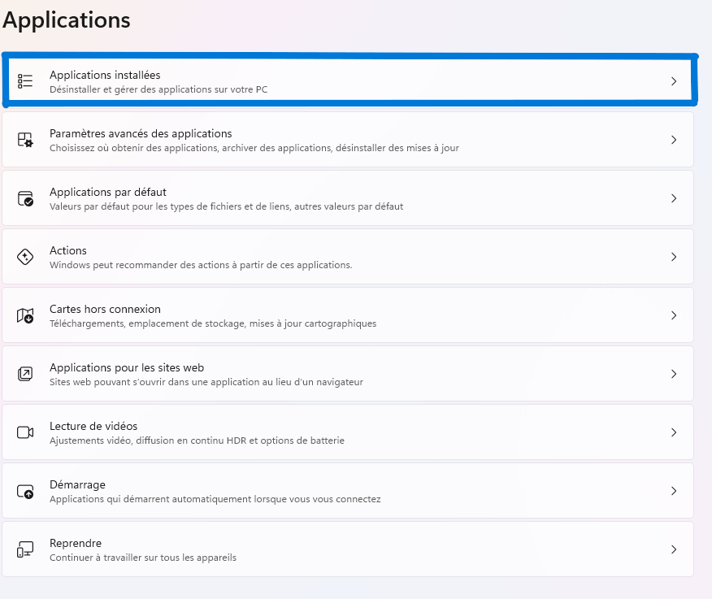
Étape 4 — Rechercher Relicfall
Dans la barre de recherche, tapez Relicfall. L’application apparaît dans la liste.
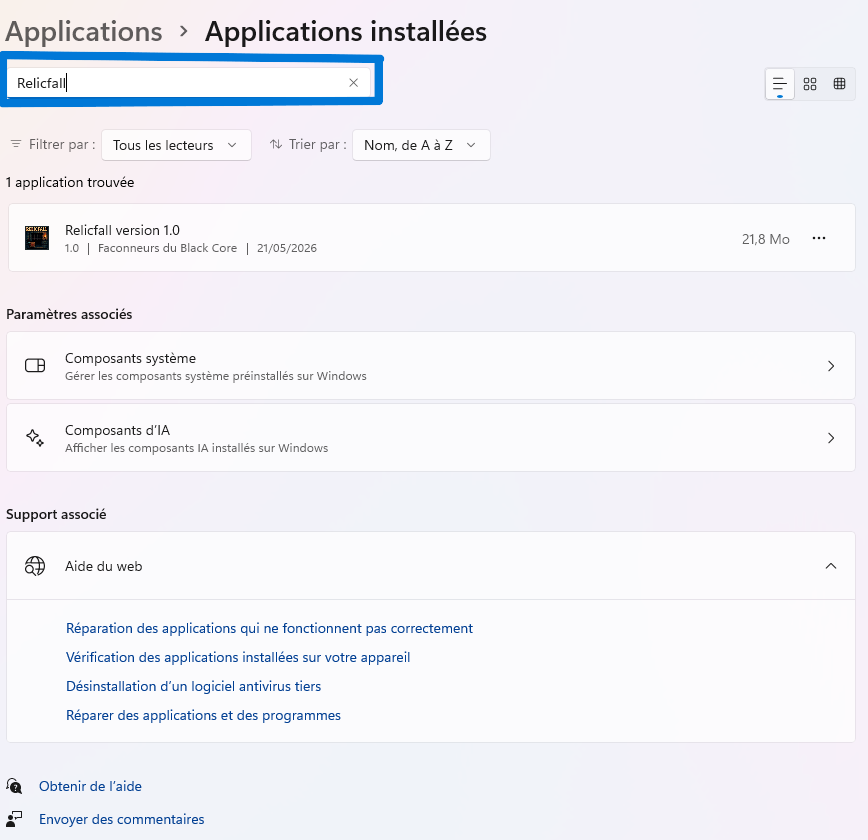
Étape 5 — Désinstaller
Cliquez sur les trois points à droite de l’entrée Relicfall, puis cliquez sur Désinstaller.
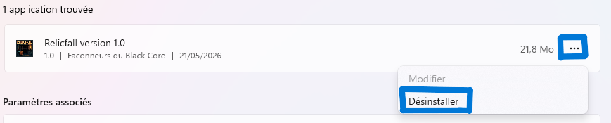
Étape 6 — Confirmer
Une fenêtre de confirmation apparaît. Cliquez sur Désinstaller.
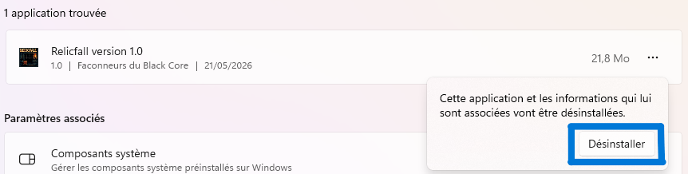
Étape 7 — Autoriser
Si Windows demande une autorisation, cliquez sur Oui.
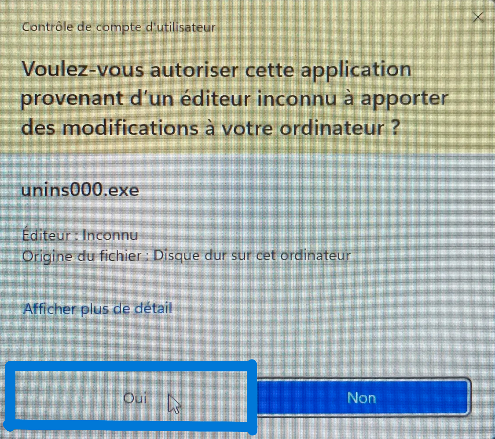
Étape 8 — Confirmer la suppression
Une boîte de dialogue demande confirmation de la suppression complète. Cliquez sur Oui.
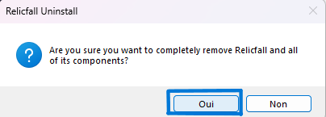
Étape 9 — Sauvegardes et paramètres
Une seconde fenêtre demande si vous souhaitez supprimer les sauvegardes et paramètres. Cliquez sur Oui pour tout supprimer ou sur Non pour conserver vos données.
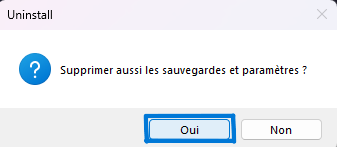
Télécharger le document PDF
Vous pouvez également télécharger la procédure complète d'installation et de désinstallation au format PDF.
Télécharger le PDF